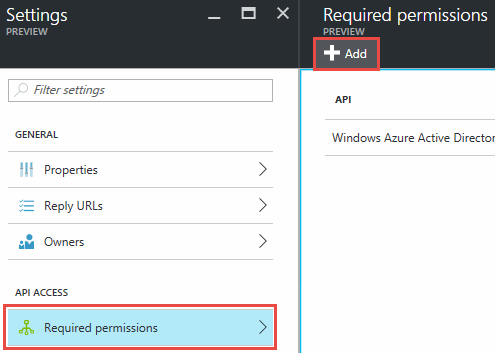

Richiedi modifiche alla documentazione
Richiedi modifiche alla documentazione Modifica questa pagina
Modifica questa pagina Scopri come collaborare
Scopri come collaborareVai alla documentazione per la versione più recente.
Aggiunta di account cloud provider a Cloud Manager
Collaboratori
Se si desidera implementare Cloud Volumes ONTAP in diversi account cloud, è necessario fornire le autorizzazioni necessarie a tali account e aggiungere i dettagli a Cloud Manager.
Quando si implementa Cloud Manager da Cloud Central, Cloud Manager aggiunge automaticamente un "account cloud provider" Per l’account in cui hai implementato Cloud Manager. Se il software Cloud Manager è stato installato manualmente su un sistema esistente, non viene aggiunto un account di provider cloud iniziale.
Impostazione e aggiunta di account AWS a Cloud Manager
Se si desidera implementare Cloud Volumes ONTAP in diversi account AWS, è necessario fornire le autorizzazioni necessarie a tali account e aggiungere i dettagli a Cloud Manager. La modalità di fornitura delle autorizzazioni dipende dal fatto che si desideri fornire a Cloud Manager le chiavi AWS o l’ARN di un ruolo in un account attendibile.
Concessione delle autorizzazioni quando si forniscono le chiavi AWS
Se si desidera fornire a Cloud Manager le chiavi AWS per un utente IAM, è necessario concedere le autorizzazioni necessarie a tale utente. La policy IAM di Cloud Manager definisce le azioni e le risorse AWS che Cloud Manager può utilizzare.
-
Scarica la policy IAM di Cloud Manager da https://["Pagina delle policy di Cloud Manager"^].
-
Dalla console IAM, creare la propria policy copiando e incollando il testo dalla policy IAM di Cloud Manager.
https://["Documentazione AWS: Creazione di policy IAM"^]
-
Allegare il criterio a un ruolo IAM o a un utente IAM.
-
https://["Documentazione AWS: Creazione dei ruoli IAM"^]
-
https://["Documentazione di AWS: Aggiunta e rimozione dei criteri IAM"^]
-
L’account dispone ora delle autorizzazioni necessarie. Ora puoi aggiungerlo a Cloud Manager.
Concessione delle autorizzazioni assumendo ruoli IAM in altri account
È possibile impostare una relazione di trust tra l’account AWS di origine in cui è stata implementata l’istanza di Cloud Manager e altri account AWS utilizzando i ruoli IAM. In seguito, fornirai a Cloud Manager l’ARN dei ruoli IAM degli account attendibili.
-
Accedere all’account di destinazione in cui si desidera implementare Cloud Volumes ONTAP e creare un ruolo IAM selezionando un altro account AWS.
Assicurarsi di effettuare le seguenti operazioni:
-
Inserire l’ID dell’account in cui risiede l’istanza di Cloud Manager.
-
Allegare la policy IAM di Cloud Manager, disponibile in https://["Pagina delle policy di Cloud Manager"^].

-
-
Accedere all’account di origine in cui risiede l’istanza di Cloud Manager e selezionare il ruolo IAM associato all’istanza.
-
Fare clic su Trust Relationship > Edit trust relationship.
-
Aggiungi l’azione "sts:AssumeRole" e l’ARN del ruolo creato nell’account di destinazione.
Esempio
{ "Version": "2012-10-17", "Statement": { "Effect": "Allow", "Action": "sts:AssumeRole", "Resource": "arn:aws:iam::ACCOUNT-B-ID:role/ACCOUNT-B-ROLENAME" } } -
L’account dispone ora delle autorizzazioni necessarie. Ora puoi aggiungerlo a Cloud Manager.
Aggiunta di account AWS a Cloud Manager
Dopo aver fornito un account AWS con le autorizzazioni richieste, è possibile aggiungerlo a Cloud Manager. Ciò consente di avviare i sistemi Cloud Volumes ONTAP in tale account.
-
Nella parte superiore destra della console di Cloud Manager, fare clic sull’elenco a discesa delle attività, quindi selezionare Impostazioni account.
-
Fare clic su Add New account (Aggiungi nuovo account) e selezionare AWS.
-
Scegliere se si desidera fornire le chiavi AWS o l’ARN di un ruolo IAM attendibile.
-
Verificare che i requisiti della policy siano stati soddisfatti, quindi fare clic su Create account (Crea account).
È ora possibile passare a un altro account dalla pagina Dettagli e credenziali quando si crea un nuovo ambiente di lavoro:

Configurazione e aggiunta di account Azure a Cloud Manager
Se si desidera implementare Cloud Volumes ONTAP in diversi account Azure, è necessario fornire le autorizzazioni necessarie a tali account e aggiungere dettagli sugli account a Cloud Manager.
Concessione delle autorizzazioni di Azure mediante un’entità del servizio
Cloud Manager ha bisogno delle autorizzazioni per eseguire azioni in Azure. È possibile concedere le autorizzazioni richieste a un account Azure creando e impostando un’entità di servizio in Azure Active Directory e ottenendo le credenziali Azure di cui Cloud Manager ha bisogno.
La seguente immagine mostra come Cloud Manager ottiene le autorizzazioni per eseguire operazioni in Azure. Un oggetto principale del servizio, legato a una o più sottoscrizioni Azure, rappresenta Cloud Manager in Azure Active Directory e viene assegnato a un ruolo personalizzato che consente le autorizzazioni richieste.


|
La procedura seguente utilizza il nuovo portale Azure. In caso di problemi, utilizzare il portale Azure classic. |
Creazione di un ruolo personalizzato con le autorizzazioni di Cloud Manager richieste
È necessario un ruolo personalizzato per fornire a Cloud Manager le autorizzazioni necessarie per avviare e gestire Cloud Volumes ONTAP in Azure.
-
Scaricare il https://["Policy di Cloud Manager Azure"^].
-
Modificare il file JSON aggiungendo gli ID di abbonamento Azure all’ambito assegnabile.
È necessario aggiungere l’ID per ogni abbonamento Azure da cui gli utenti creeranno i sistemi Cloud Volumes ONTAP.
Esempio
"AssignableScopes": [ "/subscriptions/d333af45-0d07-4154-943d-c25fbzzzzzzz", "/subscriptions/54b91999-b3e6-4599-908e-416e0zzzzzzz", "/subscriptions/398e471c-3b42-4ae7-9b59-ce5bbzzzzzzz" -
Utilizzare il file JSON per creare un ruolo personalizzato in Azure.
Nell’esempio seguente viene illustrato come creare un ruolo personalizzato utilizzando Azure CLI 2.0:
az role Definition create --role-Definition C:/Policy_for_cloud_Manager_Azure_3.6.1.json
Ora dovresti avere un ruolo personalizzato chiamato operatore cloud manager di OnCommand.
Creazione di un’entità del servizio Active Directory
È necessario creare un’entità del servizio Active Directory in modo che Cloud Manager possa autenticarsi con Azure Active Directory.
È necessario disporre delle autorizzazioni appropriate in Azure per creare un’applicazione Active Directory e assegnarla a un ruolo. Per ulteriori informazioni, fare riferimento a. https://["Documentazione di Microsoft Azure: Utilizza il portale per creare un’applicazione Active Directory e un service principal in grado di accedere alle risorse"^].
-
Dal portale Azure, aprire il servizio Azure Active Directory.

-
Nel menu, fare clic su App Registrations (Legacy).
-
Creare l’entità del servizio:
-
Fare clic su Nuova registrazione applicazione.
-
Immettere un nome per l’applicazione, mantenere selezionata l’opzione Web app/API, quindi immettere un URL, ad esempio http://[]
-
Fare clic su Create (Crea).
-
-
Modificare l’applicazione per aggiungere le autorizzazioni richieste:
-
Selezionare l’applicazione creata.
-
In Impostazioni, fare clic su autorizzazioni richieste, quindi fare clic su Aggiungi.

-
Fare clic su Select an API (Seleziona un’API), selezionare Windows Azure Service Management API, quindi fare clic su Select (Seleziona).

-
Fare clic su Access Azure Service Management as organization users (Accedi a Azure Service Management come utenti dell’organizzazione), fare clic su Select (Seleziona), quindi su Done (fine)
-
-
Creare una chiave per l’entità del servizio:
-
In Impostazioni, fare clic su chiavi.
-
Inserire una descrizione, selezionare una durata, quindi fare clic su Salva.
-
Copiare il valore della chiave.
Quando Aggiungi un account cloud provider a Cloud Manager, devi inserire il valore della chiave.
-
Fare clic su Proprietà, quindi copiare l’ID dell’applicazione per l’entità del servizio.
Analogamente al valore della chiave, è necessario inserire l’ID dell’applicazione in Cloud Manager quando si aggiunge un account del provider cloud a Cloud Manager.

-
-
Ottenere l’ID del tenant Active Directory per la propria organizzazione:
-
Nel menu Active Directory, fare clic su Proprietà.
-
Copiare l’ID della directory.

Proprio come l’ID dell’applicazione e la chiave dell’applicazione, è necessario inserire l’ID tenant di Active Directory quando si aggiunge un account del provider cloud a Cloud Manager.
-
A questo punto, si dovrebbe disporre di un’entità del servizio Active Directory e copiare l’ID dell’applicazione, la chiave dell’applicazione e l’ID del tenant Active Directory. Devi inserire queste informazioni in Cloud Manager quando Aggiungi un account cloud provider.
Assegnazione del ruolo Cloud Manager Operator all’entità del servizio
È necessario associare l’entità del servizio a una o più sottoscrizioni Azure e assegnarle il ruolo Cloud Manager Operator in modo che Cloud Manager disponga delle autorizzazioni in Azure.
Se si desidera implementare Cloud Volumes ONTAP da più sottoscrizioni Azure, è necessario associare l’entità del servizio a ciascuna di queste sottoscrizioni. Cloud Manager consente di selezionare l’abbonamento che si desidera utilizzare durante l’implementazione di Cloud Volumes ONTAP.
-
Dal portale Azure, selezionare Subscriptions (Abbonamenti) nel riquadro di sinistra.
-
Selezionare l’abbonamento.
-
Fare clic su Access Control (IAM), quindi su Add.
-
Selezionare il ruolo operatore cloud OnCommand.
-
Cercare il nome dell’applicazione (non è possibile trovarla nell’elenco scorrendo).
-
Selezionare l’applicazione, fare clic su Select, quindi fare clic su OK.
L’entità del servizio per Cloud Manager dispone ora delle autorizzazioni Azure richieste.
Aggiunta di account Azure a Cloud Manager
Dopo aver fornito un account Azure con le autorizzazioni richieste, è possibile aggiungerlo a Cloud Manager. Ciò consente di avviare i sistemi Cloud Volumes ONTAP in tale account.
-
Nella parte superiore destra della console di Cloud Manager, fare clic sull’elenco a discesa delle attività, quindi selezionare Impostazioni account.
-
Fare clic su Aggiungi nuovo account e selezionare Microsoft Azure.
-
Immettere le informazioni sull’entità del servizio Azure Active Directory che concede le autorizzazioni richieste.
-
Verificare che i requisiti della policy siano stati soddisfatti, quindi fare clic su Create account (Crea account).
È ora possibile passare a un altro account dalla pagina Dettagli e credenziali quando si crea un nuovo ambiente di lavoro:

Associazione di sottoscrizioni Azure aggiuntive a un’identità gestita
Cloud Manager consente di scegliere l’account e l’abbonamento Azure in cui si desidera implementare Cloud Volumes ONTAP. Non è possibile selezionare un’altra sottoscrizione Azure per il profilo di identità gestita, a meno che non venga associato a. https://["identità gestita"^] con questi abbonamenti.
Un’identità gestita è l’iniziale "account cloud provider" Quando si implementa Cloud Manager da NetApp Cloud Central. Quando hai implementato Cloud Manager, Cloud Central ha creato il ruolo di operatore di Cloud Manager di OnCommand e lo ha assegnato alla macchina virtuale di Cloud Manager.
-
Accedere al portale Azure.
-
Aprire il servizio Abbonamenti e selezionare l’abbonamento in cui si desidera implementare i sistemi Cloud Volumes ONTAP.
-
Fare clic su controllo di accesso (IAM).
-
Fare clic su Aggiungi > Aggiungi assegnazione ruolo e aggiungere le autorizzazioni:
-
Selezionare il ruolo operatore cloud OnCommand.
L’operatore di gestione cloud di OnCommand è il nome predefinito fornito in https://["Policy di Cloud Manager"]. Se si sceglie un nome diverso per il ruolo, selezionare il nome desiderato. -
Assegnare l’accesso a una macchina virtuale.
-
Selezionare l’abbonamento in cui è stata creata la macchina virtuale Cloud Manager.
-
Selezionare la macchina virtuale Cloud Manager.
-
Fare clic su Save (Salva).
-
-
-
Ripetere questa procedura per gli abbonamenti aggiuntivi.
Quando crei un nuovo ambiente di lavoro, dovresti ora avere la possibilità di scegliere tra più sottoscrizioni Azure per il profilo di identità gestito.